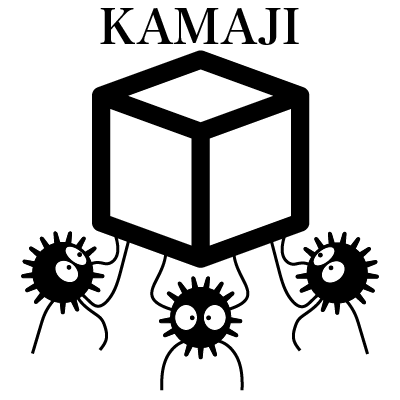

Getting Started
Installation
Prerequisites
Step 1: Clone the Repository
Step 2: Create the Conda Environment
2.1 Create the Environment
2.2 Activate the Environment
Step 3: Install the Kamaji Package
Step 4: Verify Installation
Step 5: Running Kamaji
Step 6: Deactivate the Environment
Step 7: Updating the Environment
Quickstart
Run Your First Simulation
What It Does
Relevant Files
Examples
Basic Simulation
PID-Controlled Navigation
Auction-Based Collision Avoidance
Urban Air Mobility Scenario (3D)
Symbolic CBF-Based Collision Avoidance
Key Steps
How make_cbf_system() Works
Breakdown
Highlight: Symbolic CBF Definition
Visualization
Concepts
Configuration Files
Structure
Key Fields
Agents
Simulator
Controls
Dynamics
Control Barrier Functions
Auctions
Configuration
Methods
🛡 Control Barrier Functions (CBFs)
Auction-Based Fairness
Nominal Control & Correction
Applications
About
Development
How to Contribute
Code Guidelines
License
Contact
Bug Reports and Questions
Citation
Related Publications
How to Include This in LaTeX
API Reference
Agent
compute_control
Simulator
__init__
add_agents
clear_manual_control
load_from_config
remove_agent
set_cbf_system
set_manual_control
set_sim_params
simulate
step
Auction
__init__
allocation
best_response
compute_payments
compute_payments_from_delta
compute_payments_vcg
constrained_demand
find_m
marginal_valuation
payment
payoff
plot_bid_demand_over_time
plot_bid_price_over_time
reset
run
run_without_agent
select_next_player
valuation
Kamaji Documentation
Concepts
Dynamics
Edit on GitHub
GitHub
« Previous
Next »